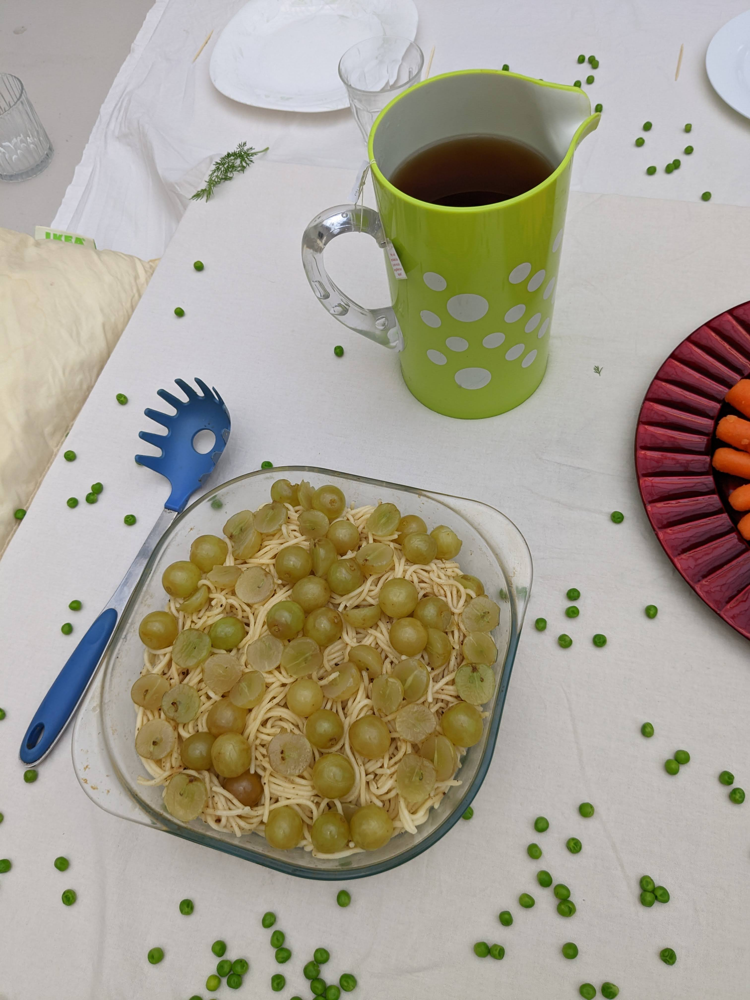

They Are The Worm, You Are The Fruit, 2022
An experimental performative dinner where the feeling of rejection is served through the foods you eat. A performance where I had croissants as shoes and my arms were covered in vaseline, while I served plates of food to 15 invited guests. I kept beginning what seemed like a difficult conversation, but I couldn't really get it out. My demeaner was extremely uncomfortable and anxious, awkward. I wanted the guests, and myself, to feel a sense of rejection.
The menu was intuitively chosen by me, based a synesthetic characterization of what being rejected would taste like. Grapes soaked in vinegar on a bed of plain spaghetti, freezer-aisle garlic bread that hadn't been cooked only defrosted, agar-agar cupcakes with carrots and celery and dill inside, carrots that had lost their color (parsnips), soy bits only soaked in water, tea that had turned cold.
The tableware and setting had all been chosen to also evoke the feeling of rejection.
This was created as a work-in-progress, a quick dirty work, and I ended up being the one fully rejected by the discomfort of the audience, who, not knowing what to do in response, began a critiquing session of the piece during my performance. (I cried afterwards). It was, by these means, successful, but not fun.